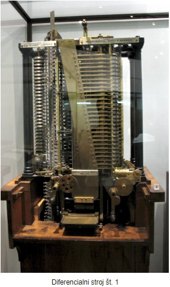
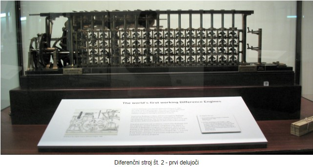
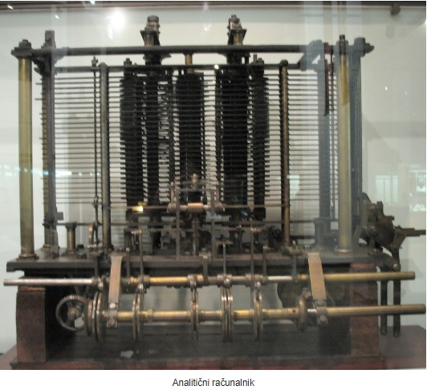

Eden najpomembnejših mož v zgodovini računalništva
Izdelal je načrte treh mehanskih strojev za računanje.
Z diferenčnim strojem 1 je na osnovi seštevanja in pomnenja podatkov (100 števil) omogočil tiskanje matematičnih tabel. Stroj računa polinome 6. stopnej. Poganjal ga je parni stroj
Diferenčni stroj 2 po načrtih omogočal računanje polinomov 7. stopnje s še večjo natančnostjo. Izdelan 1991 - deluje, sedaj je v muzeju
Analitični stroj obdeluje vse osnovne aritmetične operacije (+, -, *, /) v poljubnem zaporedju. Uporablja mlin - mehanizem za računanje (danes CPE - procesor). Operacije so shranjene v pomnilniku - sprva mehanksi bobem, od leta 1936 pa kartice. Predhodnik sodobnih računalnikov (prvi program).
  